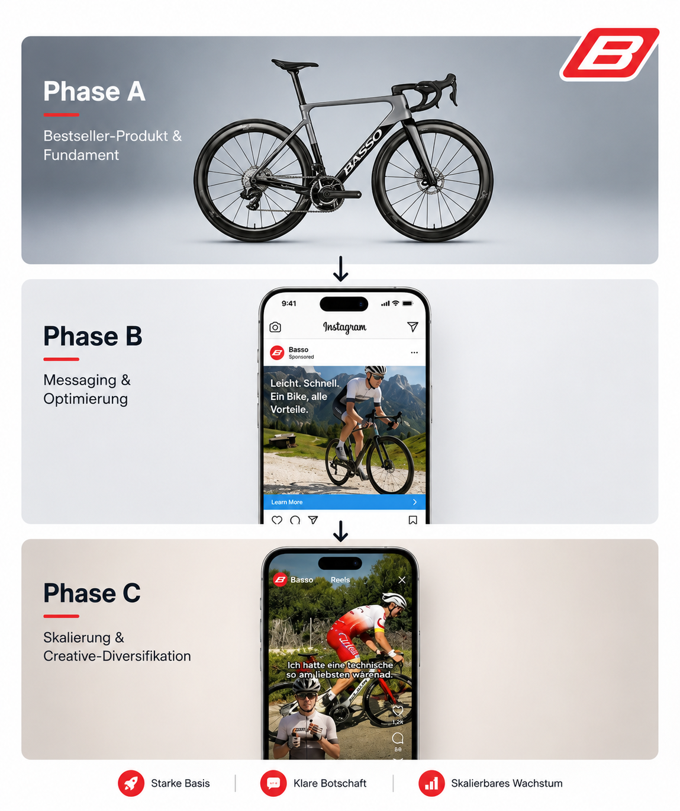
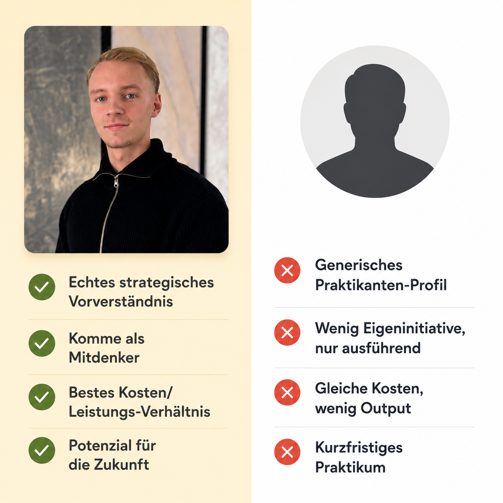

Emilio Ardito
Performance Marketing
Bewerbung
Hi, Emilio hier✌️
Marketingstudent im 4. Semester, Freelancer und ab Oktober euer neuer Praktikant? Ich bin eigentlich gar kein Zahlen-Mensch, aber die Logik hinter Performance Marketing fasziniert mich schon seit ich 16 bin. Jetzt will ich dieses Know-how in eurem Team aufs nächste Level bringen und von den Besten lernen.
Strategic Case Study
Strategie für Benotti Bikes.
Für Benotti Bikes habe ich eine Meta-Strategie für Fahrräder im Bereich 5.000 bis 10.000 Euro entwickelt. In dieser Preisklasse reicht ein einzelner Performance-Touchpoint nicht aus: Vertrauen, Suchnachfrage und Kaufbereitschaft müssen Schritt für Schritt aufgebaut werden.
- Produkt-Testing: Wir testen zuerst, welches Bike und welches Angebot bei kalten Zielgruppen den stärksten Nachfrage-Pull erzeugt.
- Awareness-Retargeting: Statt sofort auf Purchase zu optimieren, bauen wir Vertrauen über Proof, Reviews, Testsiege, Leasing und Custom Fit auf.
- Messaging-System: Sobald der stärkste Produktanker klar ist, entstehen Creatives für Begehrlichkeit, Differenzierung, Vertrauen und Kaufrechtfertigung.

USPs & Zertifikate
Warum ich ins Team passe.

Kontakt
Lass uns sprechen.
Ich freue mich über ein kurzes Gespräch oder eine Weiterleitung an passende Kontakte.